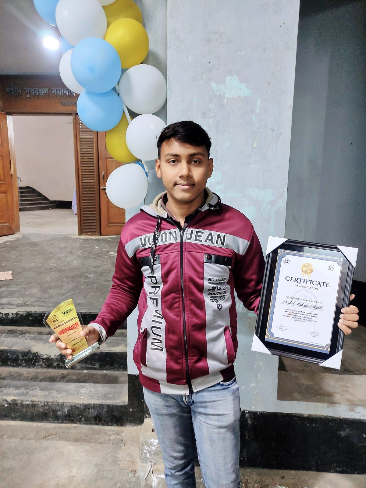

Graduate Researcher – Computer Vision & AI
I build hybrid CNN-Transformer architectures for medical image classification and satellite remote sensing, with a focus on making deep learning models interpretable for clinical and real-world decision-making.
My B.Sc. thesis — HybSwinEff — achieved 99.69% binary accuracy and 100% staging accuracy for leukemia classification. My MRCL-ELM framework reached 98.33% on EuroSAT for satellite image classification, published in Neural Computing and Applications (Q1).
I am seeking PhD opportunities to advance research at the intersection of Computer Vision, Medical AI, and Explainable AI.
Pushing the frontiers of AI in healthcare and remote sensing with interpretable, efficient deep learning.
Image classification, object detection, segmentation
AI-driven diagnostics, histology, radiology imaging
CNN, Transformer, LSTM architectures
LIME, SHAP, model interpretability
Satellite image processing and analysis
Text classification, information extraction
North Bengal International University
Computer Vision, Machine Learning, Neural Networks
North Bengal International University
Science
Notre Dame College, Mymensingh
Science
Hat Gangopara High School, Rajshahi
Peer-reviewed research in Computer Vision, Medical AI, and Remote Sensing.
Neural Computing and Applications, Springer
2025 International Conference on Quantum Photonics, Artificial Intelligence, and Networking (QPAIN), Rangpur, Bangladesh
B.Sc. Thesis, Department of CSE, North Bengal International University
Research AI systems, full-stack web apps, and open-source contributions.
99.69% binary accuracy & 100% staging accuracy for leukemia classification from peripheral blood smears. Combines EfficientNetV2 + Swin Transformer with LIME clinical interpretability.
Novel hybrid deep learning achieving 98.33% on EuroSAT & 98.10% on UC Merced. Integrates LIME and SHAP; deployed as a real-time web application. Published in Neural Computing and Applications (Q1).
Hybrid CNN-LSTM network achieving 98.30% accuracy on EuroSAT land-use classification. Generates LIME explainability visualizations. Published at IEEE QPAIN 2025.
Hybrid CNN-Transformer framework for brain tumor detection from MRI images. Combines MobileNetV3 with channel attention and Transformer encoder architectures.
Modern, responsive portfolio website with Node.js/Express backend, Neon Postgres database, and a full admin CRUD panel for managing all content.
Modern property rental platform with intuitive browsing interface, property listing details, pricing, location, and amenities. Built with Django and Tailwind CSS.
Tourism and cultural information platform showcasing the heritage, history, attractions, education, and lifestyle of Rajshahi, Bangladesh.
Bangla
Mother Tongue
English
Fluent
Hindi
Fluent
IEEE ProCon App Idea Competition
IEEE

Research Olympiad – Rajshahi Regional
Rajshahi University Research Society (RURS)



I believe effective teaching in AI bridges theory and hands-on practice. My goal is to cultivate critical thinking and research curiosity.
As President of NBIU Computer Society, organized tech talks, seminars, and research orientation sessions.
Led hands-on workshops in Deep Learning and Computer Vision for fellow students and academic clubs.
I'm happy to help undergraduate and graduate students with research questions, project guidance, or academic writing in AI and Computer Vision. Get in touch →
When an AI model tells a doctor a lesion is malignant, "trust me" isn't good enough. I explore how LIME bridges the gap between black-box accuracy and clinical trust.
Read moreWhat I learned training ResNet-50 on EuroSAT — from data augmentation strategies to achieving 96.4% accuracy on 10 land-use categories.
Read more• walkthrough of building an LSTM-based arrhythmia detector from scratch using the MIT-BIH dataset.
Read moreLecturer & Head, Department of CSE
North Bengal International University
Department HeadLecturer, Department of CSE
North Bengal International University
Research SupervisorLecturer, Department of CSE
North Bengal International University
Thesis External Examiner